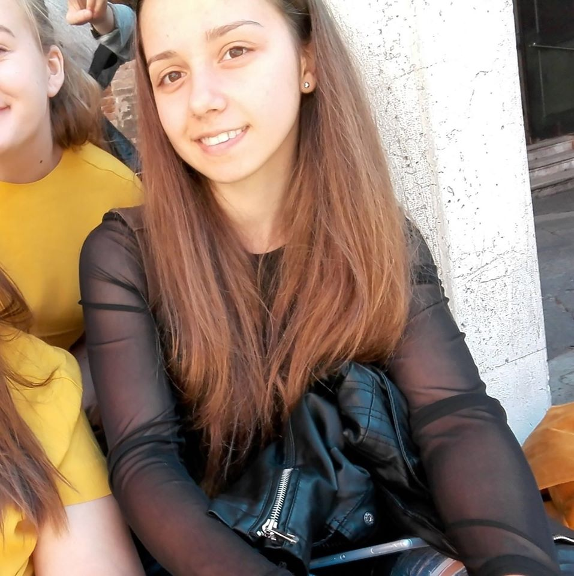

Kovács Kíra portfóliója
Kovács Kíra vagyok, a Budapesti Műszaki és Gazdaságtudányi Egyetem elsőéves hallgatója.
Ez a weboldal egy egyetemi házi feladat keretében készült, amelynek célja egy személyes portfólió oldal létrehozása.
A menüpontokra kattinvta érhető el több információ rólam.